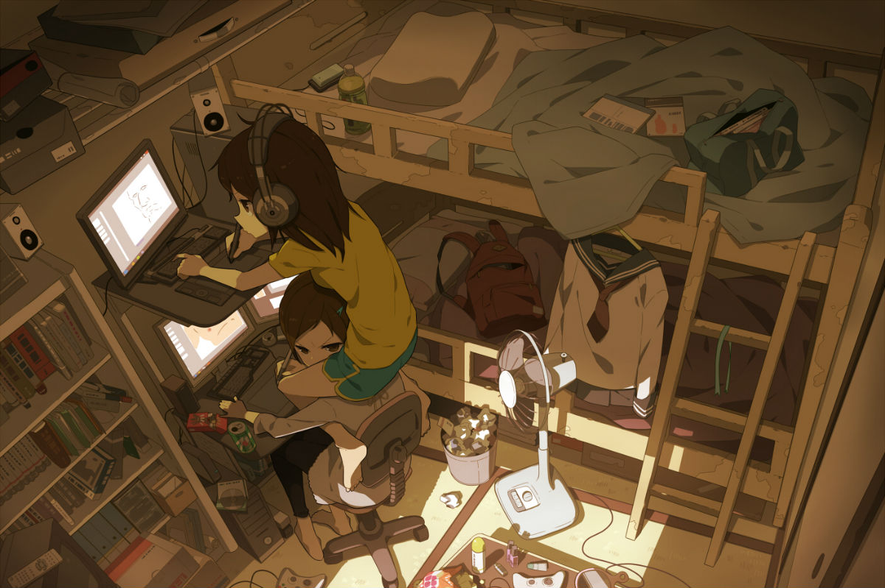
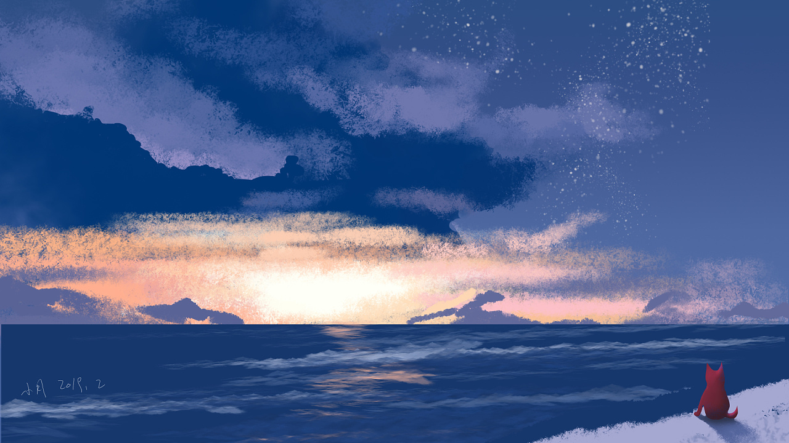

扫码 加入我们~~
All-Live(🔥速)
-

Sunshine--阳光
不要活的太累，不要忙的太疲惫;想吃了不要嫌贵，想穿了不要说浪费;心烦了找 朋友聚会，瞌睡了倒头就睡。心态平和永远最美，天天快乐才对! -- 寄语
在这座被阳光宠爱的小屋前，治愈的旋律缓缓流淌，每一个角落都充满了温暖与希望。
清晨，当第一缕阳光轻轻拂过窗帘，唤醒了沉睡的小屋，治愈的旅程便开始了。院子的花草在晨光的抚摸下，慢慢舒展着身姿，露珠在叶片上闪烁，如同大自然洒落的珍珠。小鸟在枝头欢快地歌唱，它们的歌声是那样的清澈，仿佛能够洗净心灵的尘埃。
走进小屋，一股淡淡的香气扑鼻而来，那是从厨房传来的咖啡和烘焙的香味。墙上挂着的家庭照片，记录着岁月的痕迹，每一张笑脸都是治愈的力量，让人感受到家的温暖... -

-

-
Code--IT
罗马帝国崩溃的一个主要原因是，没有0，他们没有有效的方法表示他们的C程序成功的终止。——Robert Firth
在IT技术领域，C++语言以其强大的性能和灵活性而著称。作为一种通用编程语言，C++在软件开发、系统编程、游戏开发等多个领域都有着广泛的应用。本文将深入探讨C++在IT技术中的重要地位和未来发展。
C++语言的诞生可以追溯到1980年代，由Bjarne Stroustrup在C语言的基础上发展而来。它继承了C语言的优点，并加入了面向对象编程（OOP）的特性，如类、对象、继承、多态等。这些特性使得C++成为一种强大的编程语言，能够满足各种复杂应用的需求。
在软件开发领域，C++因其高性能和良好的内存管理而受到广泛欢迎。许多... -
-
-